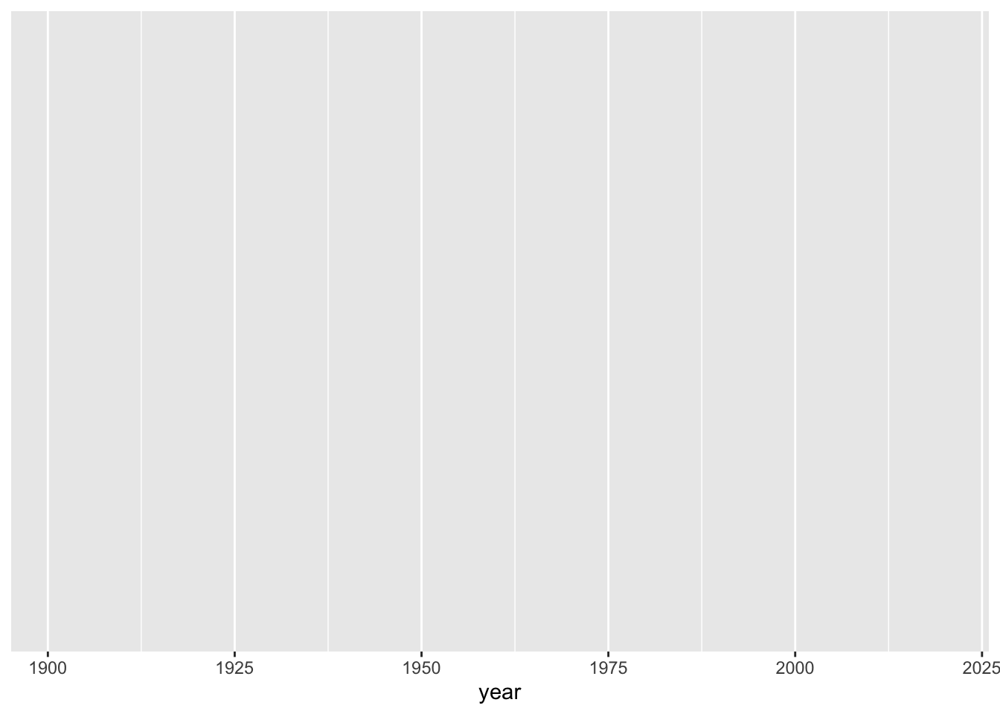
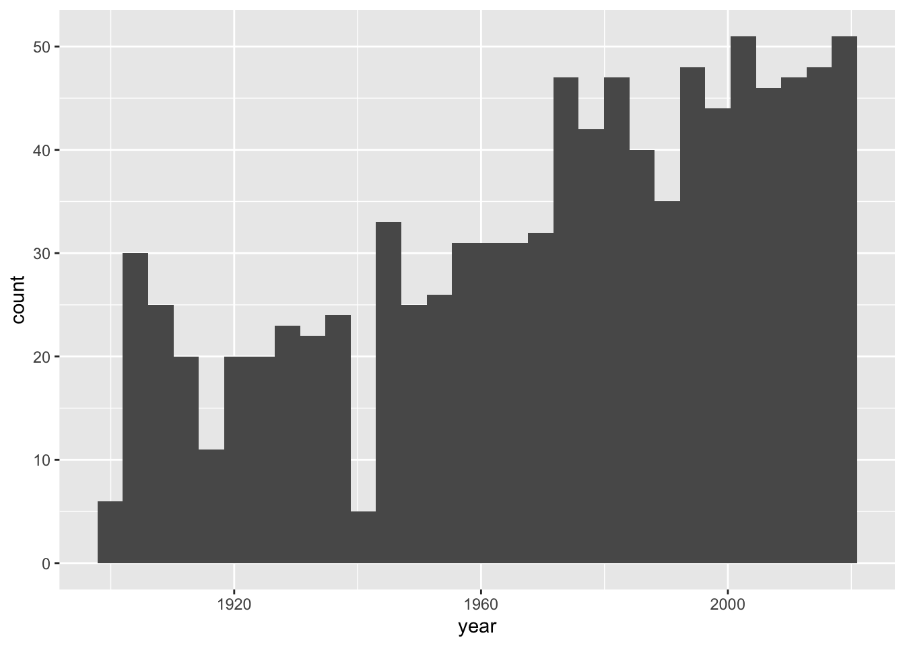
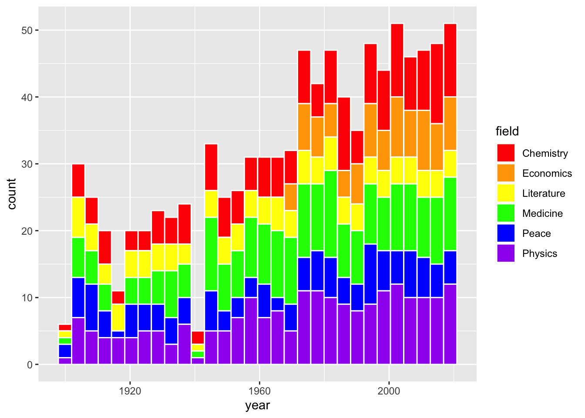
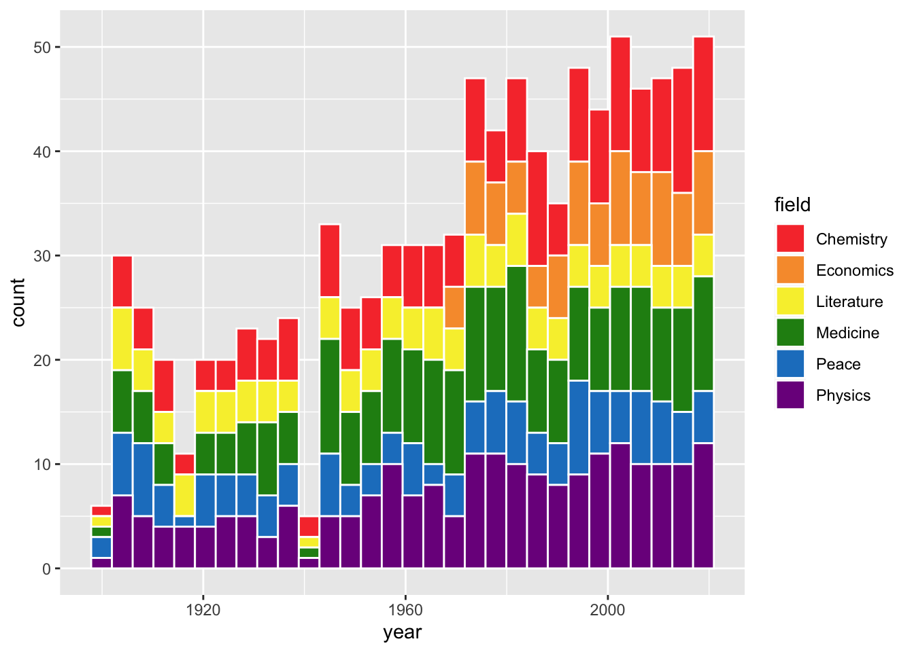
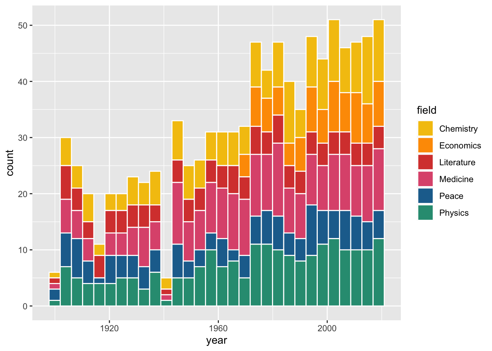
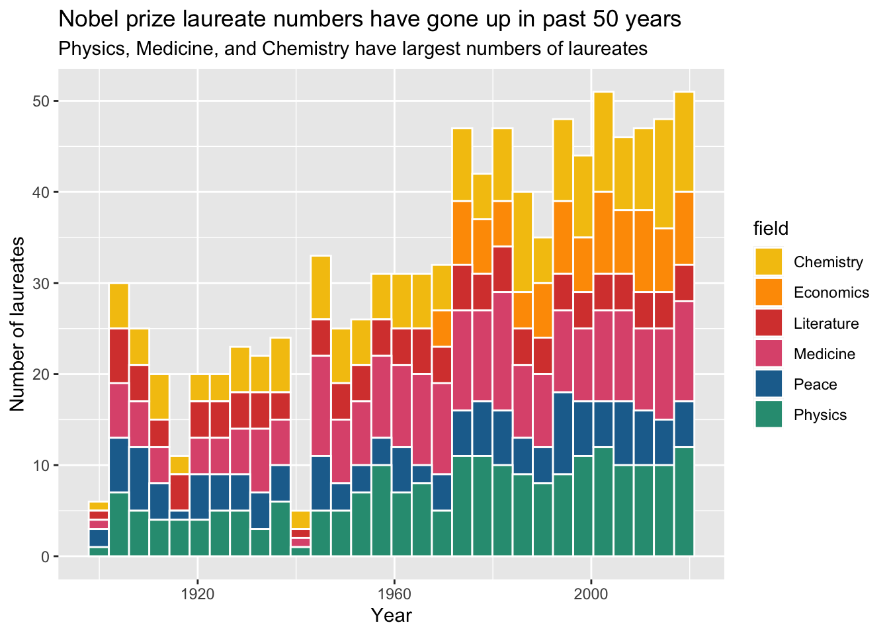

Code
library(tidyverse)
library(primer.data)A Histogram is another kind of graph that you can make with ggplot(). You start the same way as a scatterplot, but you have a different geom. You only provide an x in aes because the Histogram builds the y for you. Let’s start!
Here, I’m loading my libraries. The package tidyverse has eight packages in it, including ggplot. The package primer.data has more datasets than the ones built into R.
library(tidyverse)
library(primer.data)Here, we are going to run the code data(). This will show us a list of datasets we can use.
data()Let’s use the data nobel. If you want to see the dataset, type glimpse(nobel) into your console
It’s time to start plotting! Type ggplot(). That will be the start of your graph. If you run it now, it will be blank, because we don’t have any data yet!
ggplot()
Now we add the data to it inside of ggplot(). Set data equal to nobel.
ggplot(data = nobel)
It should still be blank, because we have not added an x or a geom. Let’s set x = year, inside of mapping = aes().
ggplot(data = nobel,
mapping = aes(x = year))
Great! Now we have an empty graph, instead of a blank canvas!
Now, we need to add a geom. Add another layer with ‘+’. Make the geom a Histogram.
ggplot(data = nobel,
mapping = aes(x = year)) +
geom_histogram()
Now, we are going to add color!
There are 2 different types of color in Histograms. Fill and Color. Color is an argument within geom_histogram(), and fill is an argument in aes We are going to change fill to field, and color to white
ggplot(data = nobel,
mapping = aes(x = year,
fill = field)) +
geom_histogram(color = "white")
That looks super nice! Now we can see the separate sections of each bin in the Histogram.
Now what if we want to change the fill colors of each of the sections? That is going to be a separate argument, we will put it before the geom called scale_fill_manual. We need to choose 6 distinct colors to put in the argument. The (values = c()) makes it a list. Let’s just use the rainbow for our colors, as all of them are built in to R. Remember to add a ‘+’ after "purple")) or there will just be an empty graph.
ggplot(data = nobel,
mapping = aes(x = year,
fill = field)) +
scale_fill_manual(values = c("red",
"orange",
"yellow",
"green",
"blue",
"purple")) +
geom_histogram(color = "white")
That looks great! Those colors are really bright, though. What if we want custom colors?
Now, we know that we can use the built in colors, but we can also get HEX colors! I found 6 different HEX colors with an online color picker.
ggplot(data = nobel,
mapping = aes(x = year,
fill = field)) +
scale_fill_manual(values = c("#f73c39",
"#f79b39",
"#f7ee39",
"#228c14",
"#1e80c7",
"#7c148c")) +
geom_histogram(color = "white")
Here is one last way to change the fill colors in a Histogram. We will need to load another Library at the top, called MetBrewer. This has many color palettes from art at the MET. Let’s load it in!
library(MetBrewer)Now let’s add it to our graph.
ggplot(data = nobel,
mapping = aes(x = year,
fill = field)) +
scale_fill_manual(values = met.brewer("Signac", 6)) +
geom_histogram(color = "white")
I used “Signac”, but there are a lot more options. Just make sure you choose one with enough colors for your legend.
This graph looks nice so far:
But what is the title, what are the axes called, and why is the legend lowercase?
This is where the function labs() comes in. labs() is short for labels, and it allows you to add a title, subtitle, x axis name, y axis name, and caption. Let’s add some labels.
ggplot(data = nobel,
mapping = aes(x = year,
fill = field)) +
scale_fill_manual(values = met.brewer("Signac", 6)) +
geom_histogram(color = "white") +
labs(title = "Nobel prize laureate numbers have gone up in past 50 years",
subtitle = "Physics, Medicine, and Chemistry have largest numbers of laureates",
x = "Year",
y = "Number of laureates")
Now, how do we get the lowercase “field” to look nicer? When we labeled x and y, they were both in the aes(), and it’s the same way with “field”. The fill is in the aes(), so we need to have fill in the labs().
ggplot(data = nobel,
mapping = aes(x = year,
fill = field)) +
scale_fill_manual(values = met.brewer("Signac", 6)) +
geom_histogram(color = "white") +
labs(title = "Nobel prize laureate numbers have gone up in past 50 years",
subtitle = "Physics, Medicine, and Chemistry have largest numbers of laureates",
x = "Year",
y = "Number of laureates",
fill = "Field")Now that is a cool looking graph!